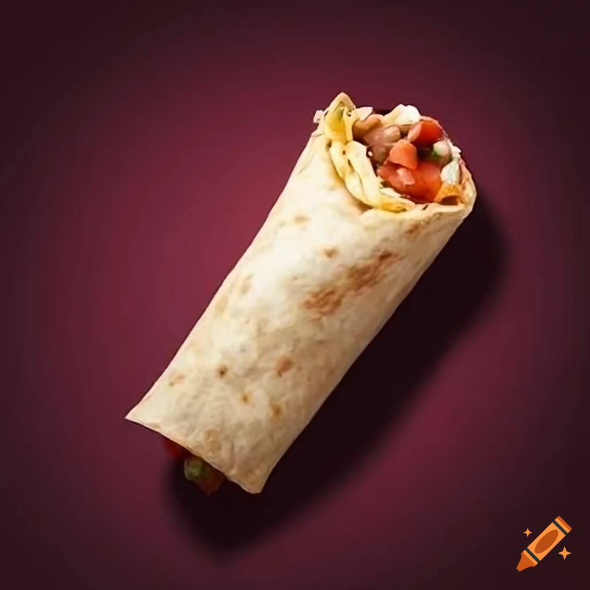

Burrito
Składniki:
Tortille (mąka lub kukurydziane)
1 duże lub 2 małe filety kurczaka, pokrojone w paski lub kawałki
1 cebula, pokrojona w plasterki
1 papryka, pokrojona w paski
1 łyżka oliwy z oliwek lub oleju roślinnego
1 łyżeczka papryki w proszku
1 łyżeczka kuminu
Sól i pieprz do smaku
1 puszka czerwonej fasoli lub czarnej fasoli, odcedzona
1 szklanka ugotowanego ryżu
1 szklanka startego sera cheddar lub żółtego sera
Sałata lodowa lub inna ulubiona sałata, pokrojona
Guacamole, sos salsa, śmietana (opcjonalnie, jako dodatki)

Instrukcje:
Na patelni rozgrzej oliwę lub olej.
Dodaj pokrojoną cebulę i paprykę, smaż aż będą miękkie.
Dodaj pokrojone filety kurczaka, paprykę w proszku, kumin, sól i pieprz. Smaż, aż kurczak będzie dobrze przypieczony.
Na koniec dodaj odcedzoną fasolę i gotowany ryż. Wymieszaj i pozostaw na ogniu jeszcze przez kilka minut.
Rozgrzej tortille na suchej patelni lub w mikrofalówce przez kilka sekund, aby były elastyczne i ciepłe.
Na środku każdej tortilli nałóż porcję farszu.
Posyp startym serem.
Dodaj sałatę i inne ulubione dodatki, takie jak guacamole, sos salsa czy śmietana.
Złóż boki tortilli do środka, a następnie zwijaj od dolnej krawędzi, aby utworzyć rolkę.
Gotowe burrito możesz podać od razu lub podgrzać na patelni lub w piekarniku przed podaniem.
Możesz też podać je z dodatkowym sosem czy śmietaną na wierzchu.